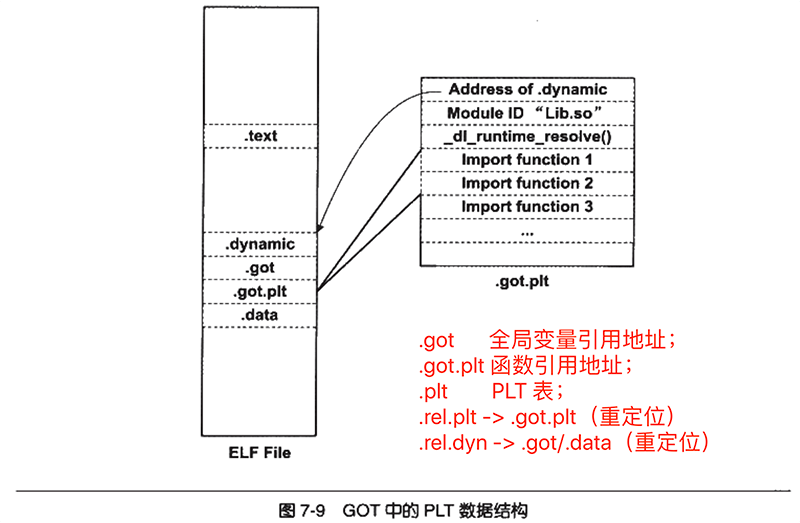
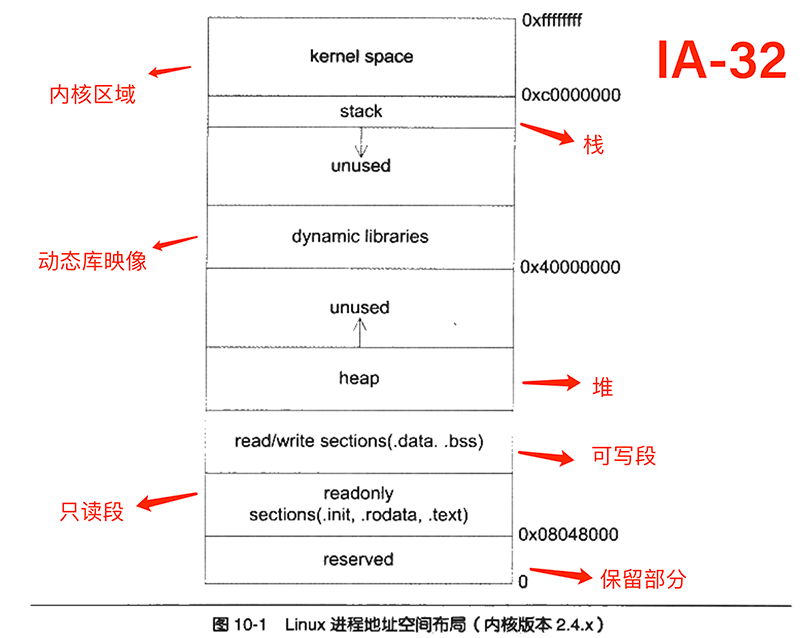

《程序员的自我修养 — 链接、装载与库》读书笔记（第 7-12 章）
书接上文。
第七章：动态链接
- （Page：180）在静态链接情况下，可执行文件中包含着需要用到模块对应的目标文件副本。因此，多个可执行文件之间可能会有多份对同一个模块目标文件中段的副本，这在一定程度上浪费了磁盘和内存空间。同时静态链接对程序依赖模块的更新也不友好。每次依赖模块有更新时，都需要重新链接、发布整个程序。当依赖的模块越多时，程序的更新频率也会越快。
- （Page：183）Linux 下的动态链接文件被称为“动态共享对象（DSO）”，一般以 “.so” 为扩展名。Windows 下通常以 “.dll” 为扩展名。
- （Page：184）当使用了动态链接方式的程序运行时，系统的动态链接器（Dynamic Loader）会将程序所需要的所有动态链接库全部装载到进程的地址空间，并将程序中所有“未决议”的符号绑定到相应的动态链接库中，并进行符号重定位工作。动态链接相较于静态链接，会导致程序在性能上的一些损失。但可以通过应用诸如 PLT 延迟绑定等方式来进行优化。据估算，动态链接相较于静态链接，性能损失大约在 5% 以下。
- （Page：186）如果某个函数是一个定义于其他静态目标中的函数，则链接器将会按照静态链接的规则，将目标文件中的符号地址进行引用重定位；而若函数是一个定义于其他动态共享对象中的函数，那么链接器就会将这个符号的引用特殊标记为一个动态链接符号，不对它进行地址重定位，而是把这个过程留到装载时进行。
- （Page：187）使用了动态链接的应用程序其入口为加载到其 VAS 中的操作系统“动态链接器”。由它完成对共享库的加载和处理，然后将控制权交还给程序继续执行。共享对象的最终装载地址在编译时是不确定的（程序头中第一个 LOAD 段的 VirtAddr 地址为 0x0），而在装载时，装载器根据当前地址空间的空闲情况，会动态分配一块足够大小的虚拟地址空间给相应的共享对象。
- （Page：190）默认情况下，单纯的“装载时重定位（基址重置。即当加载时再进行符号的重定位）”无法解决共享库指令部分在多个进程间的共享，是由于装载时重定位需要修改共享库符号的引用地址，因此没法做到同一份重定向指令被多个进程间共享。默认仅使用 “-shared” 编译生成的共享库便使用了装载时重定向。
- （Page：190）地址无关代码（PIC）：将指令中那些需要被修改的部分分离出来，跟数据部分放在一起，这样指令部分就可以保持不变，数据部分在每个进程中有一个副本。
- 四种数据引用方式：
- 模块内部函数调用、跳转：可以通过 PC-relative 访问（同一编译单元内的函数调用成立。若在全局符号介入的情况下仍需走 PLT）；
- 模块内部数据访问：可以通过 .text 与 .data 的相对固定位置进行访问；
- 模块间数据访问：通过指向变量的指针数组，即 GOT（全局偏移表）进行间接访问。GOT 位于数据段，其内容是进程独有的；
- 模块间函数调用、跳转：同上，利用 GOT 进行间接调用。
- PIC 编译选项：
- -fPIC：产生的 PIC 代码较大（常用）；
- -fpic：产生的 PIC 代码相对较小，且较快。该选项在某些平台上有一些限制，比如全局符号数量或代码长度等。大部分情况使用 -fPIC。
- （Page：198）若共享库使用了 PIC，但是主程序模块没有使用 PIC，则主程序代码在引用定义在共享库中的全局变量时，需要使用绝对地址进行链接。此时编译器会在主模块 VAS 的 .bss 段中生成该全局变量的副本，并且让共享库中对该全局变量的引用都通过 GOT 来完成。如果变量在共享模块中被初始化，动态链接器还需要将该初始值复制到程序主模块中的变量副本。
- （Page：199）对于可执行文件来说，默认情况下，如果可执行文件时动态链接的，那么编译器会使用 PIC 的方法来产生可执行文件的代码段部分。
- （Page：200）使用 PLT 来实现“延迟绑定”，即：当函数第一次被用到时才进行绑定（进行符号查找、重定位等），如果没有用到则不进行绑定。这样可以加快程序的冷启动速度。
- （Page：201）.got 表用来保存全局变量引用的地址；.got.plt 表用来保存函数引用的地址。.got.plt 表的前三项是有特殊意义的：
- 第一项保存的是 .dynamic 段的地址，这个段描述了本模块动态链接相关的信息；
- 第二项是本模块的 ID；
- 第三项是函数 _dl_runtime_resolve() 的地址。
默认情况下，.got.plt 中从第四项开始的表项最初存放的是对应该符号在 .plt 中的第二条 “push n” 指令的地址，此处的 n 为该符号在 .rel.plt 重定位表中的索引。当程序引用符号时，该处指令会将符号索引以及模块 ID 压入栈中，然后调用 _dl_runtime_resolve() 方法来解析符号地址。解析结束后，对应 .got.plt 的表项的值会变成该符号的地址，并且当符号再次通过 .plt 解析时会直接引用到该 .got.plt 中的地址，而不需要再次解析。PLT 表项的伪代码如下：
PLT0:
push *(GOT + 4) ; Module ID;
jump *(GOT + 8) ; _dl_runtime_resolve();
...
bar@plt:
jmp *(bar@GOT) ; bar@GOT 最初会指向这里的下一条指令。当 resolve 之后会直接指向解析好的符号地址；
push n ; 该符号引用在 .rel.plt 中的下标；
jump PTL0
共享库 VAS 中的相关段结构：

- （Page：203）在动态链接的 ELF 可执行文件中，有一个专门的 “**.interp” 段用来存放需要的动态链接器的路径**。
- （Page：205）.dynamic 段中保存了动态链接器所需要的基本信息，比如：依赖于哪些共享对象、动态链接符号表的位置、动态链接重定位表的位置、共享对象初始化代码的地址等。查看 .dynamic 段的内容：
readelf -d <file>
ldd <file> # 查看 ELF 可执行程序/共享库的共享库依赖树；
- （Page：206）.dynsym 为动态符号表，表示了动态链接模块之间的符号导入导出关系，只保存与动态链接相关的符号。而 .symtab 中一般会保存所有的符号。为了辅助 .dynsym，一般还会设置 .dynstr 动态符号字符串表，以保存符号名对应的字符串。而为了加快符号在程序运行时的查找过程，一般还会设有符号哈希表（.hash）。
- （Page：208）使用了 PIC 模式的共享对象也需要进行符号重定位，即通过动态重定位表 .rel.dyn 与 .rel.plt。前者是对数据引用的修正，它修正的位置位于 “.got” 以及数据段；而后者是对函数引用的修正，修正位置位于 “.got.plt”。
- .rel.dyn -> .got/.data；
- .rel.plt -> .got.plt；
- （Page：213）应用程序的进程堆栈中还保存了动态链接器需要的一些辅助信息数组（Elf32_auxv_t / Elf64_auxv_t）。
- （Page：214）动态链接器的自举：动态链接器本身不可以依赖于其他任何共享对象，且其自身所需要的全局和静态变量的重定位工作由它本身完成。大致步骤：
- 找到自身的 GOT ->
- 第一个入口地址，找到 .dynamic 段偏移地址 ->
- 在 .dynamic 表中或者重定位表和符号表等 ->
- 进行重定位。
- （Page：215）动态链接器完成自举后，会将可执行文件与链接器本身的符号表都合并到一个符号表中，即“全局符号表”。随后动态链接器会通过可执行文件的 .dynamic 段中的 DT_NEEDED 入口来递归加载（图的广度优先遍历）所有依赖的共享库（SO-NAME），并将其符号表合并至全局符号表中。
- （Page：218）全局符号介入（Global Symbol Interpose）：当一个符号被加入到全局符号表时，如果相同的符号名已经存在，则后加入的符号被忽略（此为动态链接器的行为）。
- （Page：220）Linux 内核在执行 execve() 系统调用时并不关心 ELF 文件是否是可执行的（文件头 e_type 是 ET_EXTC 还是 ET_DYN），它只是简单按照程序头表里的描述对文件进行装载然后把控制权交给 ELF 的入口（有 .interp 段就是动态链接器的 e_entry；否则是 ELF 文件的 e_entry）。因此共享库其实与可执行文件区别不大，甚至也可以被执行。
- （Page：222）常用的动态库操作系统调用：
- dlopen：打开；
- dlsym：查找符号；
- dlerror：错误处理；
- dlclose：关闭。
第八章：Linux 共享库的组织
- （Page：230）ABI 对于不同的语言来说要求不同，主要包括一些诸如：函数调用的堆栈结构、符号命名、参数规则、数据结构的内存分布等。
- （Page：232）Linux 下的共享库命名规范：libname.so.x.y.z；其中：
- “x” 表示主版本号，重大升级（可能不向后兼容）；
- “y” 表示次版本号，增量升级（一般向后兼容）；
- “z” 表示发布版本号，错误修复和性能改进（需向后兼容）。
名称中的 “name” 部分为共享库的链接名，可以在编译时使用：
# -lname 指定链接时需要查找库 libname.so 的最新版；
clang++ main.cc -o main.so -fPIC -shared -lname -L.
- （Page：233）SO-NAME：Linux 下使用该机制来管理共享库的版本。如一个共享库版本为 libfoo.so.2.6.1，则其 SO-NAME 为 libfoo.so.2，操作系统会根据该名称产生一个指向最新版本（次版本号和发布版本不同）共享库的软链接。同样的，为了保持兼容性，在输出 ELF 时也会将 .dynamic 中 DT_NEEDED 类型保存为所依赖库的 SO-NAME。
- （Page：235）Linux 下可以使用 ldconfig 更新共享库 SO-NAME 的软链接，让其指向共享库的最新版。
- （Page：237）基于符号的版本机制：让每个导出和导入符号都有一个相关联的版本号，并且让链接器记录程序所依赖的集合中版本号最小的那个版本集合。可以使用“符号版本脚本”来控制共享库中的符号版本以及对外可见性。
- （Page：241）FHS（File Hierarchy Standard）标准：该标准规定了一个系统中的系统文件应该如何存放，包括各个目录的结构、组织和作用。目前包括 Linux 在内的大多数开源操作系统都遵循该标准。对于共享库：
- /lib：主要存放系统最关键和基础的共享库。一般为 /bin 及 /sbin 下程序需要用的库；
- /usr/lib：存放非系统运行时需要的共享库，主要为开发时用到的共享库；
- /usr/local/lib：主要存放第三方应用程序的库。
- （Page：242）如果 .dynamic 段中 DT_NEEDED 表项里保存的是共享库的相对路径，则动态链接器会搜索以下位置来查找目标动态库：
- （由环境变量 LD_PRELOAD 预先装载的共享库）；
- 由环境变量 LD_LIBRARY_PATH 指定的路径（可用于调试）；
- 由路径缓存文件 /etc/ld.so.cache 指定的路径；
- /usr/lib；
- /lib；
- /etc/ld.so.conf 文件中指定的目录。
为了加快动态链接器的查找速度，ldconfig 程序会将各个共享库的 SO-NAME 与对应的共享库文件位置关系缓存在 /etc/ld.so.cache 文件中。
- （Page：244）可以利用环境变量 LD_DEBUG=all 来打开动态链接器的调试功能，以查看完整的动态链接过程。该环境变量的可选值：
- bindings：显式动态链接的符号绑定过程；
- libs：显式共享库的查找过程；
- versions：显式符号的版本依赖关系；
- reloc：显式重定位过程；
- symbols：显式符号表查找过程；
- statistics：显式动态链接过程中的各种统计信息；
- all：显式以上所有信息；
- help：显式上述可选值的帮助信息。
- （Page：245）为共享库指定 SO-NAME：
# -Xlinker 只能向链接器传递一对参数；
# -Wl 可以向链接器同时传递多个参数。
clang lib.c -o lib.so -shared -fPIC -Wl,-soname,lib.so.1
- （Page：246）清除共享库/可执行文件中的所有符号和调试信息：
strip <file>
- （Page：247）如果希望共享库在被装载时能够进行一些初始化工作，比如：打开文件、网络连接等。在 GCC 中可以为共享库指定构造/析构函数（具体执行实际依实现而定，不保证可以使用标准库中的对象）：
// 构造函数数字小的将在数字大的之前运行，析构函数相反；
void __attribute__((constructor(5))) fooA() {};
void __attribute__((constructor(10))) fooB() {};
void __attribute__((destructor)) bar() {};
- （Page：248）共享库脚本：共享库本身是一个符合特定规则的脚本文件，即：可以把几个现有的共享库通过一定方式组合起来，从用户角度看就是一个新的共享库。比如 libC.so 的内容可以为以下的文本内容：
GROUP( libA.so libB.so )
第九章：Windows 下的动态链接
（略）
第十章：内存
- （Page：284）大多数操作系统都会将内存空间中的一部分（通常为高地址部分）挪给内核使用，而应用程序则无法直接访问这一段内存，这一部分被称为内核空间。在剩下的用户空间中，也有如下一些特殊区域：
- 栈：维护函数调用的上下文，通常在用户空间的最高地址处分配；
- 动态库映射区：映射装载的动态库；
- 堆：容纳应用程序动态分配的内存区域，位于栈下方的相对低地址处；
- 可执行文件映像：存放可执行文件在内存里的映像；
- 保留区：即对内存中受保护内存区域的总称，如极小地址段。

- （Page：286）在计算机系统中，栈总是向下增长的。在 i386 下，栈顶由名为 esp（X86-64 下为 rsp 寄存器）的寄存器进行定位。压栈操作使栈顶地址减小，弹出使栈顶地址增大。根据栈的增长方向，栈底实际位于高地址处。
- （Page：287）栈保存了一个函数调用所需要的维护信息，即“堆栈帧/活动记录”。其中包括如下几方面内容：
- 相关参数：函数的返回地址和参数；
- 临时变量：包括函数的非静态局部变量以及编译器自动生成的其他临时变量；
- 保存的上下文：包括在函数调用前后需要保持不变的寄存器。
- （Page：288）在 i386 中，一个函数的活动记录用 ebp 与 esp 这两个寄存器划定范围。esp 指向栈的顶部，即活动记录顶部。而 ebp 指向了函数活动记录中存放调用函数之前 ebp 值的位置，ebp 又被称为“帧指针”。(在 X86-64 中，rbp 只在栈帧长度无法在编译前得知时才会使用，否则可直接使用 rsp 在栈上引用数据)
- （Page：288）i386 下的函数调用规则：
- 把所有或一部分参数压入栈中，如果有其他参数没有入栈，则使用某些特定的寄存器传递；
- 把当前指令的下一条指令（函数返回地址）的地址压入栈中；
- 跳转到函数体执行。
- （Page：289）GCC 的参数 “**-fomit-frame-pointer**” 会取消帧指针 ebp，而仅通过 esp 直接引用帧上的数据。其好处是可以多出一个 ebp 寄存器，坏处则是会使帧上寻址速度变慢，无法准确定位函数的调用轨迹等。
- （Page：293）一个“调用约定（Calling Convention）”通常会规定如下几方面内容：
- 函数参数的传递顺序和方式（使用栈/寄存器传参？）；
- 栈的维护方式（由哪一方来清理栈？）；
- 名字修饰（Name-mangling）的策略（为了在链接时对不同的调用惯例进行区分）。
- （Page：294）cdecl（C-declaration）调用惯例：即 C 语言默认在 8086/IA32 下使用的调用惯例。它规定：
- 参数传递按从右至左的顺序压入栈中；
- 由函数调用方清理堆栈；
- 名字修饰会在函数名称前加 “_”（目前 GCC/Clang 已经不会默认为 C 符号添加下划线）。
- （Page：298）i386 下其他常见的调用惯例：stdcall、fastcall、pascal。
- （Page：298）C++ thiscall 调用惯例：专用于类成员函数的调用。
在调用 C++ 非静态成员函数时使用此约定。基于所使用的编译器和函数是否使用可变参数，有两个主流版本的 thiscall。 对于 GCC 编译器，thiscall 几乎与 cdecl 等同：调用者清理堆栈，参数从右到左传递。差别在于 this 指针，thiscall 会在最后把 this 指针推入栈中，即相当于在函数原型中是隐式的左数第一个参数。
在微软 Visual C++ 编译器中，this 指针通过 ecx 寄存器传递，其余同cdecl 约定。当函数使用可变参数，此时调用者负责清理堆栈。thiscall 约定只在微软 Visual C++ 2005 及其之后的版本被显式指定。其他编译器中，thiscall 并不是一个关键字。
- （Page：299）对于函数返回值，一般 4 字节以内用 eax 返回，5-8 字节用 eax+edx，即 eax 存储低四字节，edx 存储高四字节的方式。对于更大尺寸的对象，C 语言通常会使用一个临时的栈上对象作为中转，因此性能会有所损失（i386）。
- （Page：305）为什么需要堆？因为栈上的数据在函数返回时就会被释放掉，所以无法将数据传递至函数外部。而全局变量（以及静态变量被存放在 .data 段中，直接映射到进程的 VAS 中）没有办法动态地生成，只能在编译时定义，且缺乏表现力。进程的堆空间一般由程序的运行库管理，其动态申请的过程也并非是直接通过系统调用的方式，因为这种方式的性能开销过大。一般情况下是程序向操作系统申请一块大小适当的堆空间，然后由程序自己（运行库）管理这块空间。
- （Page：306）用来分配堆空间的系统调用：
- ***brk()***：通过设置进程数据段的结束地址，即把数据段的结束地址向高地址移动，来扩大空间。并将这部分扩大出来的空间来作为堆空间使用；
- ***mmap()：向操作系统申请一段虚拟地址空间，这部分空间可以映射到某个文件。也可以不映射到具体文件而成为匿名空间*，以作堆空间之用。
- （Page：307）Glibc 中的 malloc 函数对于小于 128KB 的请求会在现有的堆空间中，通过堆分配算法为它分配一块空间并返回；对于大于 128KB 的请求会通过 mmap() 系统调用分配一块匿名空间，然后在这个匿名空间中为用户分配空间。
- （Page：311）常用的堆分配算法：
- 空闲链表：把堆中各个空闲的块按照链表的方式连接起来，当用户请求一块空间时，可以遍历整个链表，直到找到大小合适的块并将它拆分。当用户释放空间时将它合并到空闲链表中；
- 位图：将整个堆划分为大量的块，每个块大小相同。用户请求内存时，总是分配整数个块给用户，第一个块称为已分配区域的头，其余称为已分配区域的主体。可以用一个整数数组来记录块的使用情况，用两位数表示一个块的状态（头\主体\空闲）。
- 对象池：如果每一次分配的空间大小都一样，那么就可以按照这个每次请求分配的大小作为一个单位，把整个堆空间划分为大量的小块，每次请求的时候只需要找到一个小块就可以了。
第十一章：运行库
- （Page：319）一个典型的程序运行步骤：
- 操作系统创建进程后，把控制权交到了程序入口，该入口通常为运行库中的某个入口函数；
- 入口函数对运行库和程序运行环境进行初始化，包括：堆、IO、线程、全局变量构造等；
- 入口函数在完成初始化后，调用 main 函数，正式开始执行程序主体部分；
- main 函数执行完毕后，返回到入口函数，入口函数进行清理工作，包括全局变量析构、堆销毁、关闭 IO 等，然后进行系统调用结束进程（调用 std::quick_exit 则不会进行清理工作，而是直接结束进程）；
- （Page：320）Glibc 的程序入口 _start 由汇编实现，且和平台相关。在调用 _start 之前，装载器会把用户的参数和环境变量压入栈中，栈顶元素为 argc，接下来是 argv 和环境变量的数组。以下为 i386 对应的代码实现：
...
_start:
/* Clear the frame pointer. The ABI suggests this be done, to mark
the outermost frame obviously. */
xorl %ebp, %ebp
/* Extract the arguments as encoded on the stack and set up
the arguments for `main': argc, argv. envp will be determined
later in __libc_start_main. */
popl %esi /* 将 argc 的值存入 %esi */
movl %esp, %ecx /* 将栈顶地址（argv + env）存入 %ecx */
/* Before pushing the arguments align the stack to a 16-byte
(SSE needs 16-byte alignment) boundary to avoid penalties from
misaligned accesses. Thanks to Edward Seidl <seidl@janed.com>
for pointing this out. */
andl $0xfffffff0, %esp
pushl %eax /* Push garbage because we allocate 28 more bytes. */
/* Provide the highest stack address to the user code (for stacks
which grow downwards). */
pushl %esp
pushl %edx /* Push address of the shared library termination function. */
#ifdef SHARED
/* Load PIC register. */
call 1f
addl $_GLOBAL_OFFSET_TABLE_, %ebx
/* Push address of our own entry points to .fini and .init. */
leal __libc_csu_fini@GOTOFF(%ebx), %eax
pushl %eax
leal __libc_csu_init@GOTOFF(%ebx), %eax
pushl %eax
pushl %ecx /* Push second argument: argv. */
pushl %esi /* Push first argument: argc. */
pushl BP_SYM (main)@GOT(%ebx)
/* Call the user's main function, and exit with its value.
But let the libc call main. */
call BP_SYM (__libc_start_main)@PLT
#else
/* Push address of our own entry points to .fini and .init. */
pushl $__libc_csu_fini
pushl $__libc_csu_init
pushl %ecx /* Push second argument: argv. */
pushl %esi /* Push first argument: argc. */
pushl $BP_SYM (main)
/* Call the user's main function, and exit with its value.
But let the libc call main. */
call BP_SYM (__libc_start_main)
#endif
hlt /* Crash if somehow `exit' does return. */
...
整个执行流程为：*_start* -> __libc_start_main -> (…) -> exit -> _exit。其中 __libc_start_main() 内部主要完成以下事情：
- 如果有效用户 ID 与真实用户 ID 不同，则执行任何必要的安全检查；
- 初始化线程子系统；
- 注册 rtld_fini() 以便在动态共享库退出（或卸载）时释放资源；
- 注册 fini() 处理程序以在程序退出时运行；
- 调用初始化函数（*init)()；
- 用适当的参数调用用户侧的 *main()*；
- 使用 main() 的返回值调用 exit() 系统调用。
- （Page：321）查看所有系统环境变量：
export
- （Page：328）在 Linux 下，内核中每一个进程都有一个私有的“打开文件表”，这个表是一个指针数组，每个元素都指向一个内核的打开文件对象。而 fd 就是这个表的下标。当用户打开一个文件时，内核会在内部生成一个打开文件对象，并在该表中找到一个空项，让这一项指向生成的打开文件对象并返回下标。**由于该表处于内核，因此用户无法访问，即便拥有 fd，也只能通过系统提供的函数来操作**。
- （Page：329）I/O 初始化：需要在用户空间中建立 stdin \ stdout \ stderr 及其对应的 FILE 结构，使得程序进入 main() 之后可以直接使用 printf() \ scanf() 等函数。
- （Page：335）一个 C 语言运行库（CRT）大致包括如下功能：
- 启动与退出：包括入口函数及入口函数所依赖的其他函数等；
- 标准函数：由 C 语言标准规定的 C 语言标准库所拥有的函数实现；
- IO：I/O 功能的封装和实现；
- 堆：堆的封装和实现；
- 语言实现：语言中一些特殊功能的实现；
- 调试：实现调试功能的代码。
- （Page：338）C 语言的变长参数实现得益于其默认的 cdecl 调用惯例的“参数自右向左压栈传递方式”，以及“由调用方清除堆栈”两个条件。
// !! can be only used under IA32 aka i386 !!;
#include <stdio.h>
int __cdecl sum(int num, ...) {
int* p = &num + 1;
int ret = 0;
while(num--) {
ret += *p++;
}
return ret;
}
int __cdecl main(int argc, char** argv) {
printf("%d\n", sum(3, 1, 2, 3));
return 0;
}
* i386 与 X86-64 体系下在 Linux 中有着不同的 Calling Convention。在 X86-64 下，更多的参数将使用寄存器来传递，而非直接 push 到栈中。在各个体系下的可用调用规范如下表所示：
- （Page：340）运行库是平台相关的（比如 __libc_start_main() 中用到的汇编），它们与操作系统结合的十分紧密，是操作系统平台与上层语言之间的抽象层。Glibc 与 MSVCRT 事实上是标准 C 语言运行库的超集，它们各自对 C 标准库进行了一些扩展（比如增加了线程相关的函数）。
- （Page：367）crt1.o 中包含的是程序的入口函数 _start；crti.o 与 crtn.o 内提供了用于初始化函数的指令，分别用于辅助输出文件中的 .init 与 .finit 段（***_init()*** / *_finit()）以进行全局的构造和析构。将普通函数直接放入 .init 会破坏该段的结构，普通函数的 ret 指令会另 _init() 函数提前返回，而无法完成正常的初始化过程。crti.o* 与 crtn.o 提供了可以在 main() 之前和之后运行代码的机制，而真正的全局构造和析构是由 GCC 中的 crtbegin.o 与 crtend.o 来实现的。crt0.o 与 crt1.o 的区别：crt0.o 不支持 “.init” 与 ”.finit” 的启动代码，一般可能被用于 C 代码的编译环境中**。
第十二章：系统调用
- （Page：384）系统调用是应用程序（包括运行库）与操作系统内核之间的接口。
- （Page：385）在 IA32 下，Linux 使用 0x80 号中断作为系统调用的接口；eax 寄存器用于表示系统调用的接口号。每个系统调用都对应于内核源码中的一个以 “sys_” 开头的函数。当系统调用返回时，eax 又作为调用结果的返回值（X86-64 下为 rax 寄存器）。注：目前 IA32 使用 sysenter 指令（Fast System Call）进行系统调用；X86-64 使用 syscall 指令系统调用，两者本身内部仍然是通过中断的方式进行的，只不过不需要再经过“中断向量表”的查询。
- （Page：389）每一个“中断号”对应着一个“中断处理程序（ISR, Interrupt Service Routine）”。内核中存在着“中断向量表”记录着中断号与中断处理程序的对应关系。硬件中断一般来自于硬件的异常或其他事件的发生，比如电源掉电、键盘被按下等；软件中断通常是一条指令。
- （Page：389）NASM 下的系统调用：
global _start
section .text
_start: mov rax, 1 ; system call for write
mov rdi, 1 ; file handle 1 is stdout
mov rsi, message ; address of string to output
mov rdx, 13 ; number of bytes
syscall ; invoke operating system to do the write
mov rax, 60 ; system call for exit
xor rdi, rdi ; exit code 0
syscall ; invoke operating system to exit
section .rodata
message: db "Hello, world!", 11 ; note the newline at the end
这里给出一个基于 NASM 汇编的 X86-64 Linux 上可以编译运行的 “Hello, world!” 实现。首先将 rax 寄存器设置为 1，对应 sys_write 系统调用的序号；然后然通过 rdi、rsi 和 rdx 来设置系统调用函数的参数，即 fd（0）、要写入的字符串以及长度信息。最后再通过调用 syscall 指令来触发系统调用（写入 + 退出）。
第十三章：运行库实现
（略）